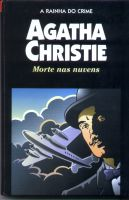

Morte nas Nuvens
Death on the Clouds
Uma velha senhora é assassinada quando viajava de avião de Paris a Londres. A causa da morte foi uma pequena ferida provocada por um dardo envenenado lançado de uma zarabatana. O assassino somente poderia ser um dos dez passageiros restantes do avião, mas, para desgraça do criminoso, entre eles estava o único que poderia descobri-lo: um baixinho de grandes bigodes e aspecto um tanto ridículo, chamado Hercule Poirot. Duas são as principais perguntas que se colocam para o grande detetive belga: 1) Por que o assassino escolheu arma tão estranha e exótica para cometer o homicídio? 2) Como pôde disparar a zarabatana dentro de um espaço tão reduzido sem ser visto por nenhum dos outros passageiros? Completamente desconcertada a polícia considera que, mesmo que o assassinato sendo um fato, sua execução parece impossível. Poirot, para quem nada é impossível, descobre o engenhoso recurso usado pelo assassino para matar a vítima e, como conseqüência, sua insuspeitada identidade.